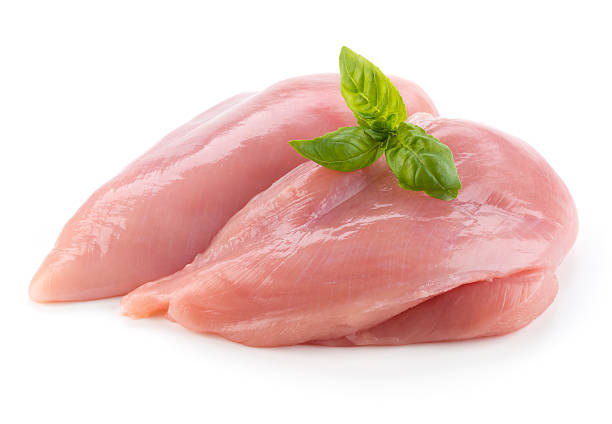
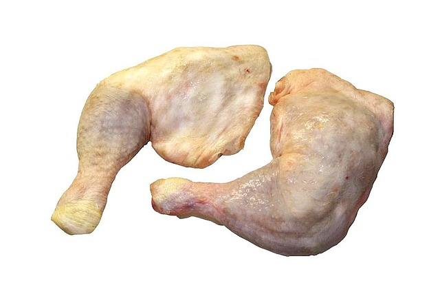

Pechuga de pollo
Corte magro y de fibra fina, ideal para plancha, empanados o salteados rápidos.
Guía visual de cortes, jugosidad y usos en cocina
Cada parte del pollo ofrece un nivel distinto de grasa infiltrada, textura y tiempo de cocción, lo que permite adaptar la elección a plancha, horno, guisos o parrilla.

Corte magro y de fibra fina, ideal para plancha, empanados o salteados rápidos.

Carne oscura más jugosa y sabrosa, perfecta para asados al horno y estofados.

Pieza pequeña con piel crujiente al dorarse, habitual en freidora, brasa o salsa.